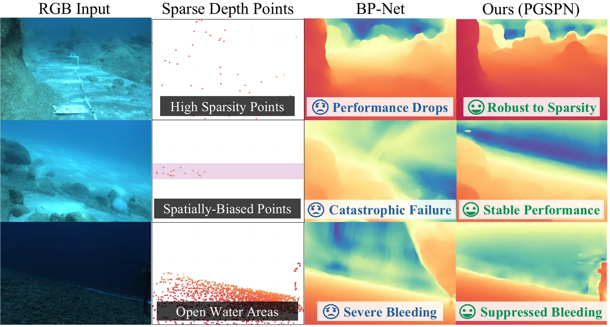
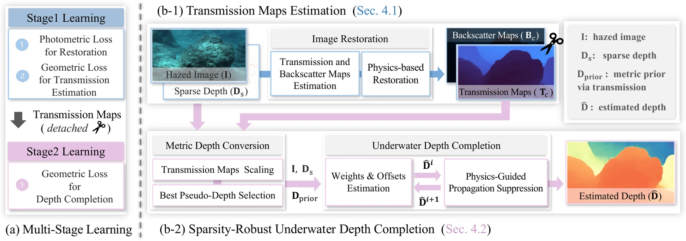
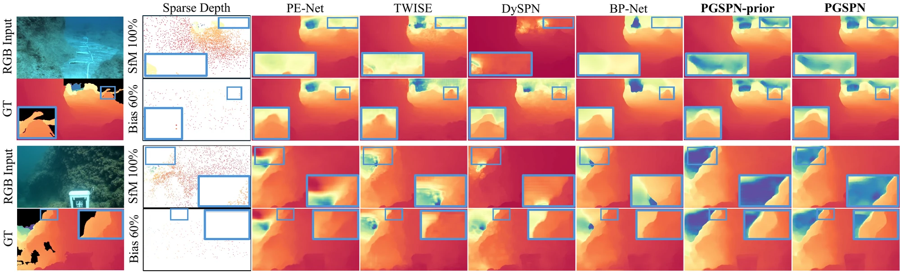
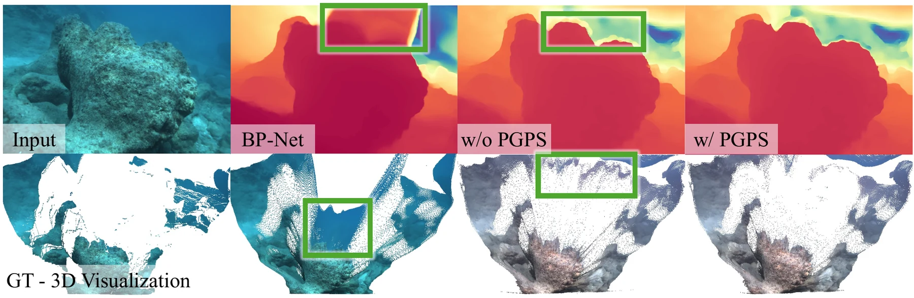

PGSPN uses underwater light attenuation as a dense depth cue, so depth completion stays stable under sparse, spatially biased input and does not bleed into open water.
Abstract
Depth completion recovers dense metric depth from an RGB image and sparse range measurements, a capability underwater vehicles need for seafloor mapping, inspection, and navigation. Many existing methods assume the uniformly distributed sparse input of terrestrial LiDAR. Underwater sources such as Structure-from-Motion, stereo, and sonar instead yield spatially biased measurements with frame-varying density and occasional gross errors, which severely degrade these methods. Underwater scenes also pose a second challenge. Open-water regions contain no physical surface and receive no ground-truth supervision. Without such supervision, estimated depth extends beyond object boundaries into empty water, a failure mode we term depth bleeding. To address both challenges, we propose PGSPN, a physics-guided spatial propagation network that exploits underwater optical attenuation as a dense depth cue. A transmission network trained with photometric restoration supervision predicts per-channel transmission maps. A physics-derived affine calibration with residual-based outlier rejection converts them into a sparsity-robust metric depth prior. Our Physics-Guided Propagation Suppression (PGPS) module then verifies the sparse anchors against this prior and attenuates propagation across prior-derived depth discontinuities. We further introduce the Depth Bleeding Index (DBI) to quantify boundary preservation where ground truth is unavailable. We evaluate PGSPN on real field datasets with sequence-level splits, a held-out dataset, real stereo measurements, and controlled turbidity and outlier studies. PGSPN reduces the mean absolute error by up to 53.6% relative to the best baseline and achieves a lower DBI than every baseline in all tested conditions. It runs at 8.1 Hz on an embedded NVIDIA Jetson AGX Orin.
Method

1. Physics-guided metric prior
Underwater light attenuates with distance, so per-channel transmission is a dense depth cue. Stage 1 estimates it from the RGB image and sparse depth, supervised by photometric restoration over the whole image. A per-frame affine fit with residual-based outlier rejection then converts the most consistent channel into a metric depth prior that stays stable under sparse and biased input.
2. Physics-Guided Propagation Suppression
The prior initializes recurrent spatial propagation. PGPS keeps only the sparse anchors that agree with the prior, and it attenuates propagation weights across prior-derived depth discontinuities, so refinement does not erase open-water boundaries.
3. Depth Bleeding Index
Standard metrics score only pixels with ground truth, so they cannot see bleeding into open water. DBI measures, on synthetic open-water regions with controlled boundaries, whether the depth discontinuity at a foreground boundary survives. Lower is better.
Results
| Sequence | Sparse input | MAE (m) ↓ | δ1 ↑ | DBI ↓ | |||
|---|---|---|---|---|---|---|---|
| Best baseline | PGSPN | Best baseline | PGSPN | Best baseline | PGSPN | ||
| rock_garden1 | Feature matching | 0.273 | 0.194 | 0.819 | 0.890 | 0.362 | 0.313 |
| rock_garden1 | SfM 100% | 0.164 | 0.087 | 0.950 | 0.974 | 0.296 | 0.211 |
| rock_garden1 | Bias 60% | 0.261 | 0.173 | 0.927 | 0.965 | 0.245 | 0.203 |
| flatiron | SfM 100% | 0.016 | 0.025 | 0.999 | 0.998 | 0.498 | 0.411 |
| flatiron | Bias 60% | 0.183 | 0.085 | 0.955 | 0.993 | 0.481 | 0.430 |
| SeaThru-D3 (held out) | Bias 60% | 0.056 | 0.049 | 0.960 | 0.979 | 0.423 | 0.365 |
Best of ten retrained baselines for each metric versus PGSPN; the better value is in bold. rock_garden1 (FLSea-Stereo) and flatiron (FLSea-VI) are sequence-level test splits, and SeaThru-D3 is evaluated without fine-tuning. Feature matching: real stereo matches. SfM 100%: all projected SfM points. Bias 60%: points kept only in a central band covering 60% of the image height.
PGSPN achieves a lower DBI than every baseline in all tested conditions and reduces MAE by up to 53.6% relative to the best baseline (flatiron, Bias 60%: 0.085 m vs. 0.183 m). When measurements are abundant (flatiron, SfM 100%), propagation-based methods interpolate them directly and reach a lower MAE, but they still bleed into open water.


Embedded deployment. PGSPN runs at 8.1 Hz on 640×384 input on an NVIDIA Jetson AGX Orin with TensorRT (FP16), which is enough for keyframe-based underwater mapping.
BibTeX
@inproceedings{yang2026pgspn,
title = {PGSPN: Physics-Guided Spatial Propagation Network for Sparsity-Robust Underwater Depth Completion},
author = {Yang, Geonmo and Lee, Juhui and Choi, Jiwon and Lee, Jungwoo and Collado-Gonzalez, Ivana and Englot, Brendan and Cho, Younggun},
booktitle = {IROS 2026 Workshop on Perception and Navigation for Marine Robotics},
year = {2026}
}